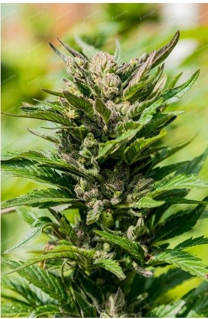
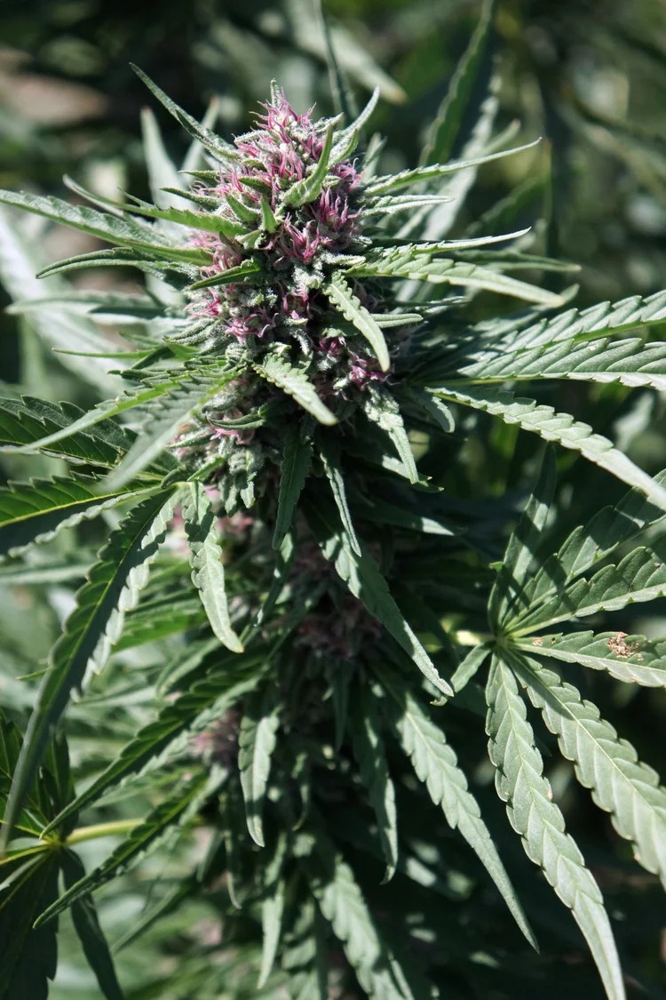
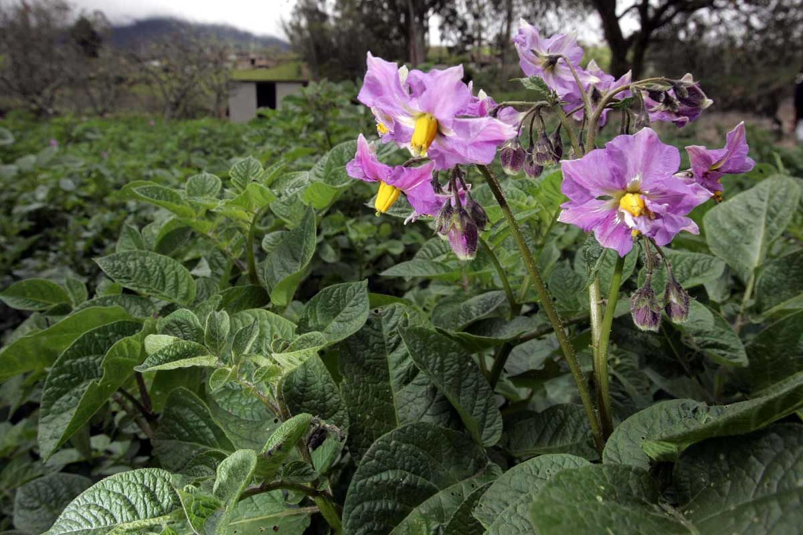
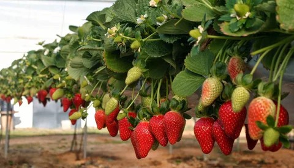
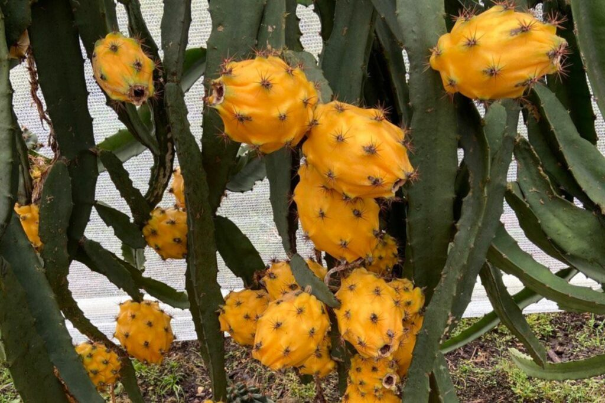
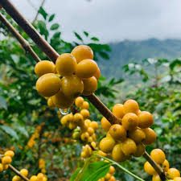
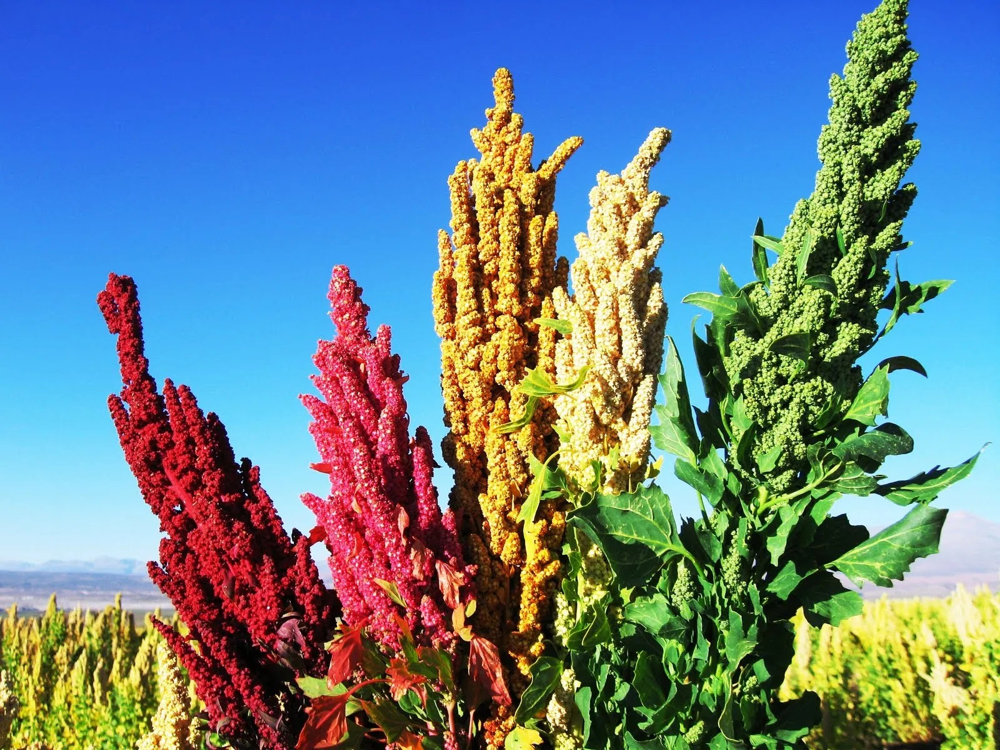
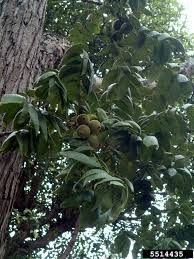
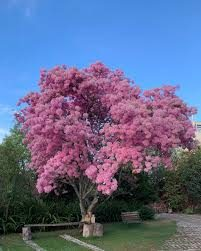
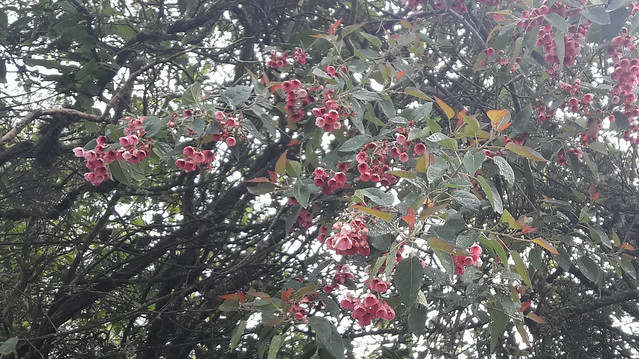

Programas Especiales
Trabajamos junto al agricultor para desarrollar cultivos nuevos y existentes con potencial de mercado.
En Pilvicsa apostamos por el desarrollo de nuevos mercados. Ponemos nuestra infraestructura de propagación, endurecimiento y laboratorio al servicio de cultivos innovadores, comprometidos con la transparencia, la legalidad y el respeto a la propiedad intelectual desde el primer día. Si tienes una idea o un cultivo que quieres desarrollar, conversemos.
🌿 Cañamo Industrial — Cannabis sativa L.
 | Cherry Oregon Cannabis sativa L.Trabajado |
 | Genética de Cliente Cannabis sativa L.Trabajado |
🔬 Propagación In Vitro — Tecnología meristemática
 | Papa In Vitro Solanum tuberosumTrabajado |
 | Fresa Fragaria × ananassaTrabajado |
 | Banano / Plátano Musa spp.Trabajado |
 | Arándano In Vitro Vaccinium corymbosumTrabajado |
 | Ornamentales In Vitro Varias especiesPotencial |
🌍 Tendencias Globales — Alto potencial comercial
 | Pitahaya / Dragon Fruit Selenicereus megalanthusTrabajado |
 | Arándanos Vaccinium corymbosumTrabajado |
 | Café de Especialidad Coffea arabicaTrabajado |
 | Quinua Chenopodium quinoaTrabajado |
🌱 Especies Nativas y en Riesgo — Conservación activa
 | Pumamaqui Oreopanax ecuadorensisPotencial |
 | Yagual / Polylepis Polylepis lanuginosaPotencial |
 | Nogal Andino Juglans neotropicaPotencial |
 | Romerillo Prumnopitys montanaPotencial |
 | Arupo Chionanthus pubescensPotencial |
 | Sacha Capulí Vallea stipularisPotencial |
Si lo que buscas no está en la lista, conversemos para desarrollar un programa de propagación juntos.
Contactar a PilvicsaNuestro Video Corporativo.
Nuestra experiencia, procesos y tecnologia.
Estamos constantemente compartiendo nuevas tecnologias, cultivos y aliados.